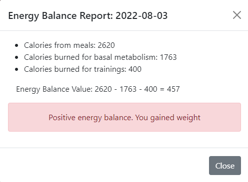

Система контроля энергетического баланса
Использованные технологии
| Backend |
Frontend |
Maven
Spring Cloud
Spring Boot 2
Spring MVC
Spring Data JPA (Hibernate)
Spring Security
REST (Jackson)
OpenAPI 3
JUnit 5
Rabbit MQ
Zipkin
ELK Stack
|
|
Описание приложения
Данное приложение позволяет рассчитывать и держать под контролем энергетический баланс организма человека. Для этого осуществляется расчет калорий, затраченных на основной
обмен веществ организма, калорий, употребленных в пищу, а также калорий, затраченных на выполнение физических упражнений. На основе этих данных производится расчет энергетического
баланса и анализ полученного значения.
Приложение построено с использованием микросервисной архитектуры на стеке Spring Cloud.
В приложении используется два вида пользовательских ролей: пользователи и администраторы. Каждой роли присущи свои выполняемые задачи.
Пользователи могут зарегистрироваться в приложении, заполнив данные об учетной записи, а также личные физиологические данные на странице регистрации. Физиологические
данные необходимы для расчета калорий, затрачиваемых на основной обмен веществ организма. После успешной регистрации пользователю на электронную почту придет письмо, содержащее ссылку,
перейдя по которой пользователь активирует свою учетную запись и сможет пользоваться приложением.
В случае, если пользователь забыл свой пароль, он может сбросить его, выполнив соответствующие действия на странице логина. На электронную почту придет письмо со ссылкой,
перейдя по которой пользователь сможет создать новый пароль.
Для подсчета калорий, употребленных в пищу в течение дня, пользователи вносят в приложение информацию о своих приемах пищи. Им доступна возможность
просматривать эту информацию, а также при необходимости изменять и удалять ее.

Для возможности вводить данные о проведенных физических тренировках пользователям сначала необходимо ввести в приложение информацию о типах физических упражнений,
которые они периодически выполняют для дальнейшей возможности их выбора в окне создания тренировок. Тип упражнения характеризуется названием упражнения, количественной единицей измерения,
а также количеством калорий, сжигаемых при выполнении упражнения.

Для подсчета калорий, затраченных на выполнение физических упражнений, пользователи вносят в приложение информацию о своих тренировках. Им доступна возможность
просматривать эту информацию, а также при необходимости изменять и удалять ее.

Пользователи могут просматривать информацию о своем энергетическом балансе, выбирая интересующую их дату в календаре. После выбора даты пользователю представляется
отчет о его энергетическом балансе. Он формируется на основе данных о питании, выполненных физических упражнениях и основном обмене веществе на выбранный день.
В зависимости от количественной величины энергетического баланса отчет содержит соответствующее сообщение касательно похудения/набора веса.


Администраторам доступны любые действия, которые можно выполнить в приложении, включая вышеописанные действия, доступные обычным пользователям.
Но основными задачами администраторов является менеджмент пользователей приложения и контроль за работой сервисов приложения.
Администраторы имеют возможность просматривать информацию о пользователях приложения с опцией поиска по имени/адресу электронной почты. Они имеют право создавать новых
пользователей, назначая им соответствующие права доступа, редактировать информацию об уже имеющихся пользователях, удалять их учетные записи.
При удалении учетной записи пользователя вся информация пользователя касательно его приемов пищи, выполненных тренировок, личных видов физических упражнений, а также
отчеты по энергетическому балансу также удаляется.
При возникновении у пользователя проблем с подтверждением электронной почты, администратор может вручную активировать учетную запись пользователя.
В случае, если пользователь забыл свой пароль, у администратора есть возможность сменить пароль пользователя на новый.

Администраторы осуществляют контроль за работоспособностью приложения путем проверки состояния всех его сервисов. Также им доступна возможность обновления конфигурации сервисов.
Администраторы имеют доступ к дашбордам Eureka, Zipkin, Kibana, RabbitMQ.

Любому авторизованному пользователю приложения доступна возможность просмотреть свой профиль, изменить имя и личные физиологические данные, а также сменить текущий пароль.